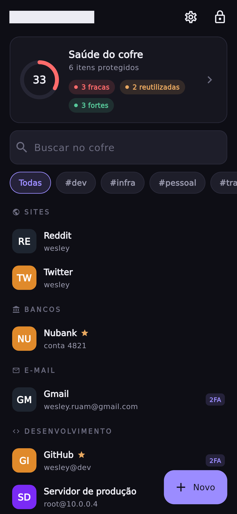
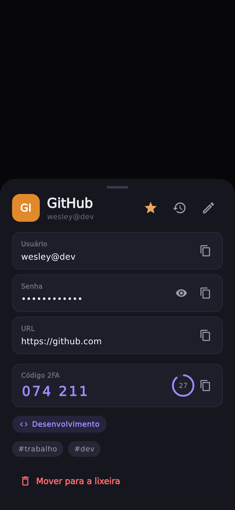
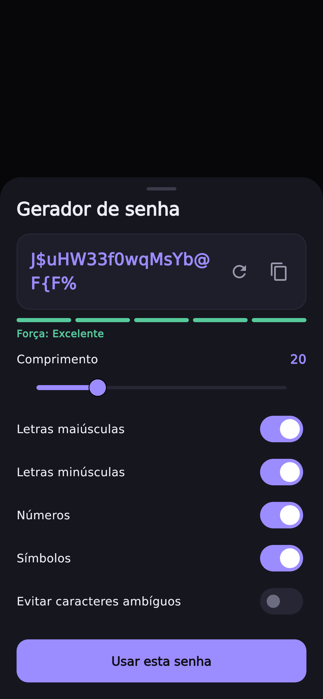
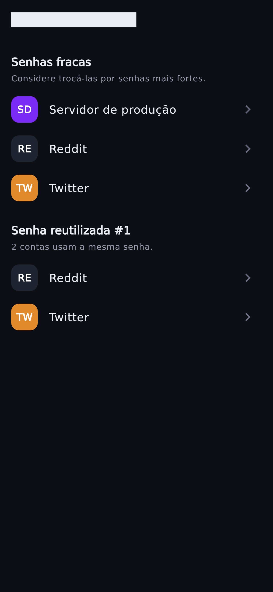
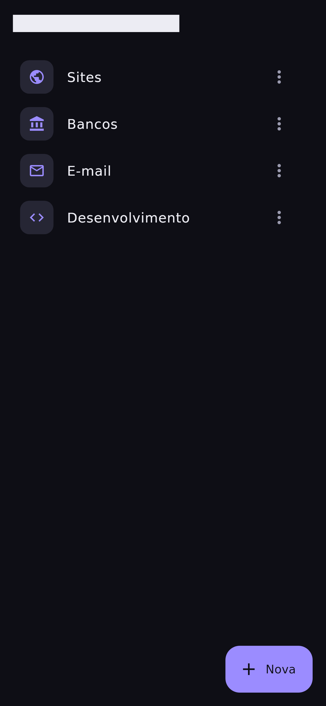
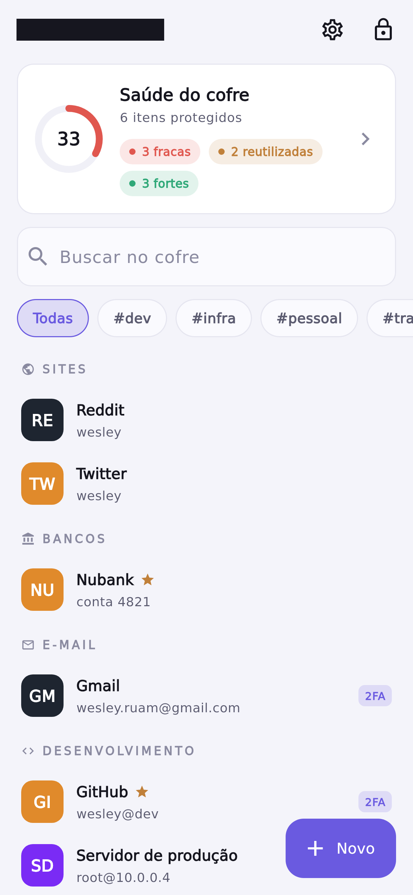
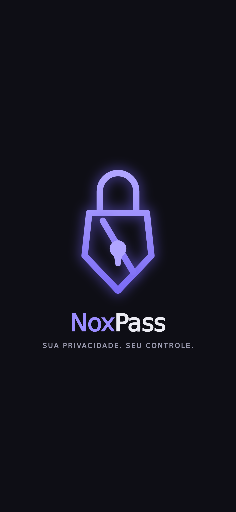

Seus dados são
só seus.
O NoxPass é um gerenciador de senhas e segredos offline-first e zero-knowledge. Nada sai do seu dispositivo em texto claro — e nem eu, nem ninguém, consegue ler o que está lá dentro.
Criptografia de envelope, de ponta a ponta
A sua senha mestra nunca é armazenada. Ela abre uma cadeia de chaves que protege cada campo sensível — e trocar a senha não exige recifrar o cofre inteiro.
Senha mestra
Só você a conhece. É o único segredo que entra no sistema.
Argon2id
Deriva a chave mestra com custo de memória alto, resistente a força bruta.
Chave do cofre
Uma chave aleatória embrulhada pela chave mestra — o coração do envelope.
Chaves derivadas
Chaves separadas para o banco (SQLCipher) e para cada campo sensível.
Por que "zero-knowledge"? Porque em nenhum ponto o app precisa — ou consegue — ver seus dados sem a sua senha. Biometria e PIN apenas guardam a chave localmente com segurança; a nuvem, quando você usa, recebe apenas bytes cifrados que não pode ler.
Cada tela, pensada nos detalhes
Sete telas do NoxPass em execução — do momento de abertura ao relatório de saúde do cofre.
Seu cofre, num relance
A tela inicial abre com o cartão de Saúde do cofre, busca instantânea e seus itens agrupados por categoria. A barra de tags filtra tudo com um toque.

Tudo sobre um segredo
Campos copiáveis com um toque, código 2FA (TOTP) gerado ao vivo com contagem regressiva, favorito, categoria e tags — reunidos numa folha elegante.

Senhas fortes, na hora
Gerador com medidor de força em tempo real, controle de tamanho e escolha das classes de caractere — com opção de evitar caracteres ambíguos.

A saúde do seu cofre
O relatório identifica senhas fracas e reutilizadas e converte tudo numa pontuação clara, para você saber exatamente o que reforçar primeiro.

Categorias do seu jeito
Crie, renomeie e exclua categorias personalizadas para organizar o cofre — as categorias padrão ficam protegidas contra remoção acidental.

Claro ou escuro, você decide
O mesmo cofre no tema claro. O NoxPass acompanha o tema do sistema — ou fixa em claro/escuro conforme a sua preferência, salva entre sessões.

O momento de marca
Ao abrir, a logo se constrói traço a traço — uma animação vetorial nativa sobre o fundo "cofre à noite", antes de revelar o cofre.

Tudo que um cofre precisa
Segurança de verdade, sem abrir mão da experiência.
Criptografia local E2E
Banco inteiro cifrado com SQLCipher; funciona 100% offline, sem servidor.
Biometria e PIN
Desbloqueie com digital, rosto ou PIN — a chave nunca deixa o dispositivo.
2FA integrado
Gere códigos TOTP direto no item, sem precisar de um app separado.
Gerador de senhas
Senhas fortes com medidor de força e controles finos de composição.
Saúde do cofre
Detecta senhas fracas e reutilizadas e pontua a segurança geral.
Backup no seu Drive
Backup opcional na sua conta Google — só o arquivo cifrado sobe, com prévia e resolução de conflitos.
Categorias e tags
Organize com categorias, tags e favoritos; busca ampla por título, usuário e URL.
Temas e acessibilidade
Claro/escuro, microanimações e rótulos para leitores de tela.
Antiscreenshot
Bloqueio de captura de tela em conteúdo sensível no Android.
Uma base, cinco plataformas
Android, iOS, Windows, macOS e Linux a partir de um único código em Flutter.
Privacidade não deveria
ser um recurso premium.
Deveria ser o padrão. O NoxPass é código aberto — explore a arquitetura, os testes e a criptografia por dentro.